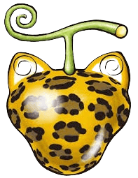
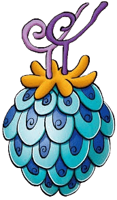
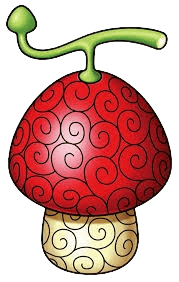

Zoan
-

Neko Neko no Mi
-

Uo Uo No Mi
-

hito hito no mi
Les zoans, hein ? Si tu lis encore ces lignes, c’est que tu t’approches d’un pouvoir plus sauvage qu’imprévisible. Ces fruits transforment le corps,
mêlant instinct animal et force brute. Pas de miracles, juste une métamorphose
totale… qui, entre de mauvaises mains, peut déchaîner Grand Line en un instant sans retour.